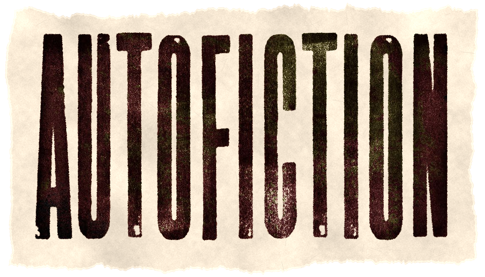
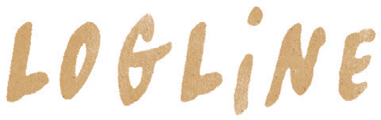
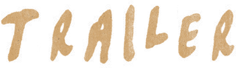
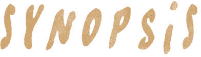
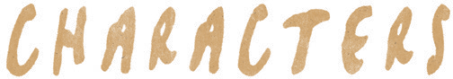
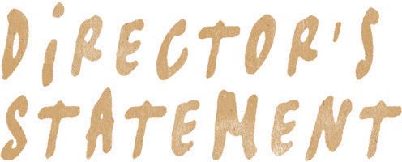
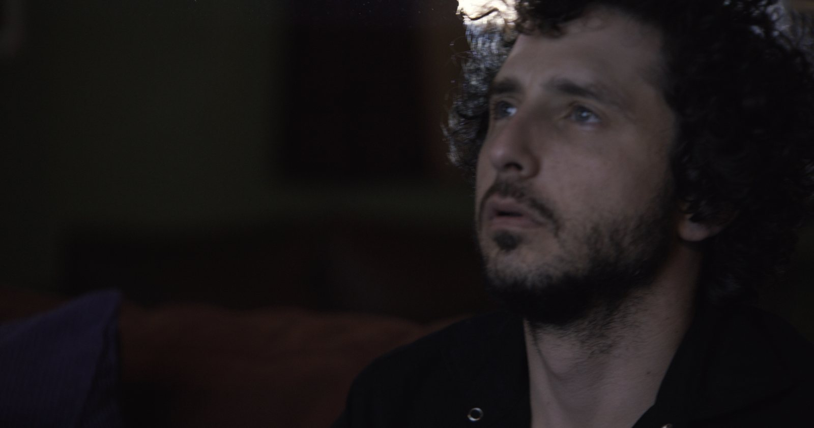
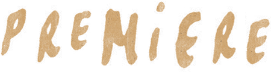
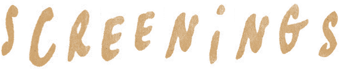
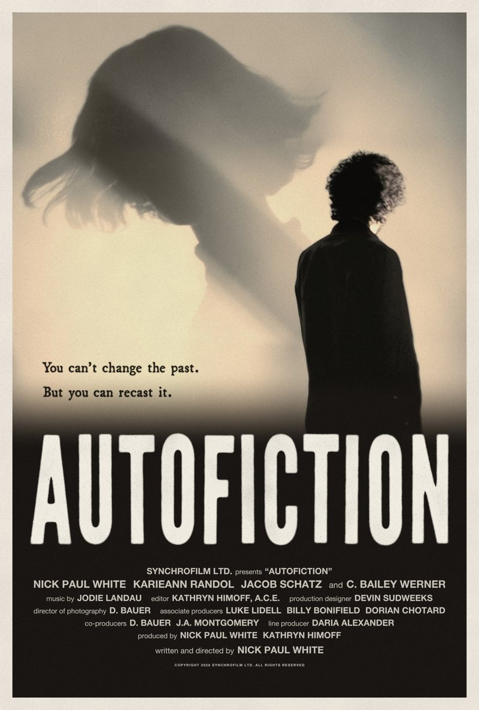

Call
5:45 PM

You can’t change the past. But you can recast it.

AUTOFICTION is a darkly comic self-portrait of a filmmaker attempting to rewrite his own past and discovering just how slippery walking the line between fact and fiction can be.


Based on fact and expanded into fiction, AUTOFICTION is a dark comedy about filmmaker Nick Paul White, who sets out to make a short film secretly inspired by a chance encounter with his ex in Paris.
When an old friend – who knows the real story – joins the project, Nick finds himself caught between his desire for authenticity and his reluctance to admit his own role in the relationship’s demise.
As the film threatens to unravel, Nick steps into the lead role himself, turning the project into a raw act of self-exposure, forcing him to take responsibility for his past and embrace the uncertainty of his future.

Tap a photo for the actor’s bio.


Ten years ago a serendipitous encounter with an ex-girlfriend sparked the initial concept for a short film; two former lovers reunited by fate spend one last night together. It’s a familiar premise, but I believed the emotional impact of that evening could lend a particular sensitivity to the story. As we moved closer to production, I began to question whether the script I’d written truly reflected my memory of that night. Details had been altered, settings changed. I even rewrote the ending to have it feel more hopeful. I wasn’t just using my past as inspiration, I was re-writing it.
This gave rise to an idea that interested me far more than the initial concept. So instead, I decided to make a film about an artist blindsided by a memory he can’t fully accept, driven to rebuild it until the fiction collapses under the weight of truth. The last piece of the puzzle was accepting that to make this film honestly, I had to play the role myself; use my real name, my real identity and embrace the vulnerable and sometimes unlikeable aspects of my character.
As a filmmaker, I’m drawn to uniquely personal stories that can only be told through cinema. With AUTOFICTION, that meant turning the camera on myself and allowing the filmmaking process to expose as much as it constructed. It’s the most vulnerable I’ve ever been in my work, and the most honest.

The world premiere of AUTOFICTION screens at the 20th Lone Star Film Festival on Friday, November 6, 2026 at 5:45 PM, at The Modern, 3200 Darnell St, Fort Worth.
Writer/director Nick Paul White and producer Kathryn Himoff will be in attendance for a Q&A following the screening.
Get tickets
More dates to be announced.Kathryn Himoff is a veteran editor and producer of feature films, television and documentaries. Her credits include Pollock, Appaloosa, House of 1000 Corpses, The Sisterhood of the Traveling Pants and additional editing on Guardians of the Galaxy Vol. 2, and she is a regular collaborator of Ed Harris. Her television pilots include The Man in the High Castle, The Office and Ugly Betty. Her recent work includes the Netflix films Players (2024) and Champagne Problems (2025).
Raised in the Bay Area before calling Austin home, Dani’s work focuses on grounding the mysterious and ephemeral with enigmatic imagery. Since graduating college with a BS in Film, she’s been published in Shuba, Elegant, One Shot, BTC, Dark Beauty, and Lividity. The last narrative she worked on premiered at Fantastic Fest. When not on set, Dani enjoys watching horror movies or listening to horror soundtracks for inspiration and aromatherapy. Employing techniques learned as a fashion filmmaker, and a touch of magic, she strives to bring a fresh and unique perspective to each project.
Jodie Landau is a Los Angeles-based composer, vocalist and percussionist whose music draws on chamber music, rock and jazz for live performance, film, theater and dance. He is a member of the Grammy-winning vocal ensemble Roomful of Teeth, the Icelandic label Bedroom Community and the Los Angeles collective wild Up. His singing can be heard on Simon Franglen’s scores for Avatar: The Way of Water and Avatar: Fire and Ash, and he was lead copyist, orchestrator, conductor and performer on David Longstreth’s score for The Legend of Ochi.
Aaron Glascock is a supervising sound editor, sound designer and re-recording mixer who has worked in film sound since the 1980s. He received an Academy Award nomination for Best Sound Editing for Birdman or (The Unexpected Virtue of Ignorance), shared with Martin Hernández, and an MPSE Golden Reel Award for War of the Worlds. His credits as supervising sound editor include Insomnia, Good Night, and Good Luck., The Town, Spring Breakers, Creed II and The Beekeeper. With Christopher S. Aud he supervised and mixed the sound for Anomalisa.
Christopher S. Aud is a supervising sound editor, sound designer and re-recording mixer whose career dates to the early 1990s. With Aaron Glascock he supervised and mixed the sound for Anomalisa, recording all of the film’s ADR. He was a re-recording mixer on The Disaster Artist, The Beekeeper and The Accountant 2, a sound designer on Mad Max: Fury Road, and a sound effects editor on Bram Stoker’s Dracula, The Thin Red Line, Blade Runner 2049 and Spider-Man: Into the Spider-Verse.
Natasha Leonnet is a senior colorist at Picture Shop in Los Angeles with more than 20 years of experience finishing features and series. She has won HPA Awards for Outstanding Color Grading for Spider-Man: Into the Spider-Verse and Spider-Man: Across the Spider-Verse, and has been nominated for films including Whiplash, Hidden Figures, First Man and Candyman. Her more than 100 credits include La La Land, Juno, Sin City, Blood Diamond and Up in the Air.

AUTOFICTION © 2026 Synchrofilm Ltd.